| Legenda |
| 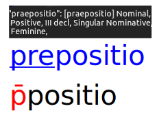 |
- The black row below (ꝑtinet, Graphemic Layer)
encodes the graphemes.
- The blue row above (pertinet),
Alphabetic Layer) encodes the alphabetic
letters (alphabemes) represented by those graphemes.
In this case, grapheme "ꝑ" (in green) represents the three underlined
alphabetic letters "p", "e" and "r".
- The black box appearing when the user hovers a word with their mouse
(pertinet: [pertineo] Verbal, II conjug, Active indicative,
resent, III singular, Linguistic Layer)
unambiguously encodes the linguistic word beyond
any spelling or graphical differences,
through a combination of lemma (pertineo)
and morphology (Verbal, II conjug, Active indicative, Present,
III singular).
|
|
 |
Start of new folio (hover for folio number, click to see manuscript page image).
Note: images are currently unavailable due to copyright restrictions) |
| 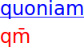 |
Abbreviation with superscript abbreviation mark: at the Graphemic Layer
the "base graphemes" (the graphemes above which the abbreviation mark
is written) and the abbreviation mark itself are red.
In this example, the macron spans above both graphems "q" and "m".
At the Alphabetic Layer the abbreviated alphabemes are
underlined, as for all abbreviation types |
|
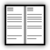 |
Start of new column (hover for column number) |
| 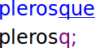 |
Abbreviation with abbreviation mark written after
the base grapheme(s): purple |
|
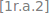 |
Start of new line (folio 1r, column 1, line 2) |
|
Abbreviation through brevigraph
(no abbreviation mark, one specific grapheme only): green |
|
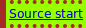 |
Start of source (click to expand) |
| 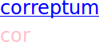 |
Abbreviation through omission of some graphemes (no abbreviation sign,
no specific brevigraph): pink |
|
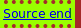 |
End of source (click to expand) |
 |
Space between words in the manuscript (at Graphematic Layer): the MS has
a space between "et" and "in", and no space between "in" and "aliis" |
|
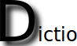 |
Dropcap |
| 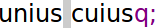 |
Space in the manuscript (at Graphematic Layer)
within a linguistic word |
|
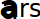 |
Larger initial |
| 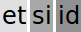 |
Unclear word (darker shades of gray represent less clear reading) |
|
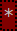 |
Note on textual criticism |
| 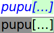 |
Italics in the blue line at the Alphabetic Layer mark nonsensical
words (due, in this example, to a gap that makes the word unintelligible) |
|
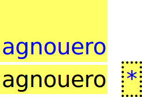 |
Emendation (for the MS reading, click on the note). |
| 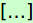 |
Gap (hover for gap extension in characters or words and for reason) |
|
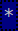 |
Note on the content |
| 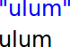 |
Quotes in the blue line mark groups of alphabemes
(not actual linguistic words) |
|
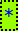 |
Note on the source |
| 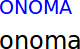 |
Small caps in the blue line mark Greek words,
ancient abbreviations ("gn" for "Gnaeus")
and Roman numerals ("xxxiiii" for 34) |
|
 |
Note on the script, on glyphs with no graphemic value (e.g. allographs)
or on the digital reproduction of the manuscript |
| 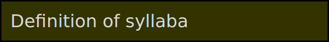 |
Section heading (not present in the manuscript, added by the editor) |
|
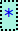 |
Note on technological issues |
| 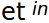 |
Text or graphemes ("in") written in the interlinear space |
|